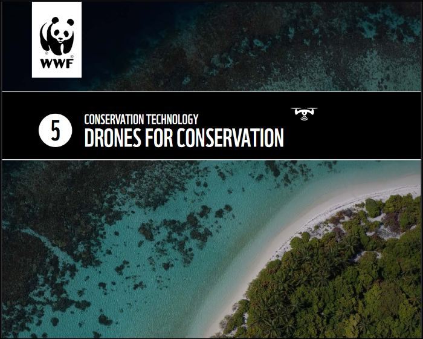

Images do that? From contrasting pixels to a measurable map.
Part IITufts Drone Program
Drone Program
Part II · Section one
Theory: lots of geometry and matrix algebra
Three things make measurement possible: many camera positions, a known focal length, and one point that appears in more than one photograph.
Concepts used with permission from Greg Crutsinger
Theory · geometry
Three positions in time, same location in space
Each photograph fixes a direction to the point — a ray from the camera's optical centre through the pixel.
A known focal length turns that pixel offset into an angle.
Where three or more rays intersect, the point's x, y and z are resolved.
Now repeat for every point, in every photo we have.
Step one
Keypoints: contrasting pixels
Does the image know a rock is a rock? Not really — but a pixel of rock beside a blade of grass is something to get excited about.
What the software sees
Adjacent pixels of sharply different value — an edge, a corner, a speck of light gravel against dark soil.
Best imagery
High contrast and heterogeneous. Flat sand, still water and fresh snow give the algorithm nothing to "hold onto".
Thousands of keypoints in a single photograph.
Step two
Tie points: the same speck, twice
A keypoint recognised in two or more overlapping photographs becomes a tie point — the thread that binds the images into one geometry.
Step three
One tie point becomes one 3D point
Every photograph that saw the speck contributes a ray. Where those rays intersect, the point acquires x, y and z — and the camera positions are solved in the same adjustment.
One ray
Direction only. The point lies somewhere along it — depth unknown.
Two rays
An intersection — but a fragile one. Small pose errors move it a long way.
Many rays
The intersection tightens. Wide angles between cameras give the strongest solution.
Point and camera poses are solved together — the bundle adjustment.
Step four
3D tie points become a sparse point cloud
Each matched tie point resolves to a coordinate in space. Thousands of them, and the landform begins to take shape.
A tie point seen from enough angles has a solvable depth.
The camera positions are back-calculated at the same time.
Step five
Densification fills the gaps
Sparse cloud
Dense cloud
The sparse point cloud proves the geometry. The dense cloud describes the surface — enough points to model terrain, canopy and structure.
Step six
From points to a surface: the mesh
A dense point cloud is still a scatter of samples or points. Connect neighbouring points into triangles and you have a continuous surface — then assign color values by draping the original photographs back over it.
Dense points
Samples with gaps between them.
Triangulated mesh
Neighbours joined into triangles.
Textured model
Original photographs draped back on.
The mesh is the surface everything else comes off — the DSM, the DTM, and the orthomosaic are all derived from it.
Simplified summary
The whole chain, in six links
01
Contrasting pixels
Adjacent values that differ sharply.
02
Keypoints
Thousands per photograph.
03
Tie points
Keypoints matched across overlapping photos.
04
Sparse point cloud
The landform takes shape in 3D.
05
Dense point cloud
Gaps filled in between the samples.
06
Mesh
Triangles make a continuous, textured surface.
A necessary reminder
This is not stitching
The drone captures from many altitudes, angles and orientations — rarely all nadir. A panorama tool would smear them together. SfM instead solves where each camera was.
Stitching
Blends pixels in 2D. Distortion and relief stay in the picture.
Photogrammetry
Recovers 3D structure and camera pose first, then projects a corrected image.
Step seven
Orthorectification restores geometry
Perspective image
Orthorectified
Removes relief distortion, sensor artifacts, earth curvature and perspective.
Uses GNSS positions, the 3D geometry and solved camera poses.
The result carries map-like qualities: distance, area and position can be measured.
The deliverable
The orthomosaic
A 2D planimetric image — built from 3D processing steps. Every pixel sits where it belongs on the ground.
Stitched (raw)
Orthorectified
Planimetric — no lean, no perspective, one consistent scale.
Georeferenced, so it drops straight into GIS alongside other layers.
Siblings from the same processing run: DSM, DTM, mesh and point cloud.
Resources (some)
Where to go next

Duffy et al., 2020 — Drone Technologies for Conservation, WWF Conservation Technology Series 1(5). Read Chapter 7.
Fig. 7.1 — overview of the general SfM process, after Westoby et al. (2012).
OpenTopography's 2021 Structure from Motion workshop — an excellent, practical walkthrough.
Experiment with your own SfM modeling using an app such as Polycam.
 Drone Program
Drone Program